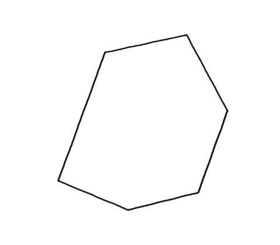
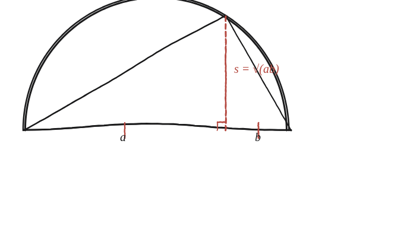

Es pot sempre retallar un polígon en peces i recompondre'l com un quadrat?

La resposta és sí — la pregunta interessant és com
El resultat es coneix com el teorema de Bolyai–Gerwien: qualsevol polígon es pot retallar en un nombre finit de peces poligonals i recompondre, sense buits ni superposicions, com un quadrat de la mateixa àrea. La demostració completa del cas general —vàlida per a un polígon de qualsevol forma— és massa llarga per a una sola pista; el que sí es pot desenvolupar amb tot detall és el primer pas del mètode, imprescindible per a qualsevol cas: trobar la longitud exacta que ha de tenir el costat del quadrat abans de retallar res.
Del rectangle al quadrat: quina longitud es busca
El pas de rectangle a quadrat és el cas més fàcil de visualitzar. Un rectangle de costats a i b té la mateixa àrea que un quadrat de costat s=√(ab) —la mitjana geomètrica de a i b (perquè s²=ab=àrea del rectangle, per definició de quadrat de la mateixa àrea). La pregunta es converteix, doncs, en: com es pot construir aquesta longitud concreta fent servir només regla i compàs?
La construcció: el mateix teorema de q09, aplicat a l'inrevés
Es dibuixa un semicercle de diàmetre a+b, i s'hi col·loca un triangle amb el vèrtex superior tocant l'arc i la base sobre el diàmetre, partit en els trossos a i b pel peu de l'altura. Per un teorema clàssic, tot triangle inscrit en un semicercle amb la hipotenusa com a diàmetre és rectangle. I un cop es té un triangle rectangle amb l'altura sobre la hipotenusa partint-la en a i b, ja se sap —de la Qüestió 9— que aquesta altura val exactament √(ab): és el mateix resultat a²=c·p / b²=c·q d'allà, aplicat aquí a l'inrevés per fabricar una arrel quadrada en lloc de demostrar un teorema.

De la longitud a les peces
Un cop es té s=√(ab) construïda amb regla i compàs, es pot demostrar que —si el rectangle no és massa allargat, és a dir si el costat llarg no supera 4 vegades el curt— només calen dos talls (tres peces) per recompondre'l en un quadrat de costat s. Si el rectangle és més allargat que això, es parteix primer per la meitat i s'apilen els dos trossos, tantes vegades com calgui, fins a entrar dins d'aquesta proporció; el teorema de Bolyai–Gerwien en garanteix la possibilitat en qualsevol cas. I un cop es domina el pas de rectangle a quadrat, qualsevol polígon s'hi pot reduir triangulant-lo primer i convertint cada triangle en un rectangle de la mateixa àrea (base × mitja alçada).
Sí, sempre: el teorema de Bolyai–Gerwien garanteix que qualsevol polígon es pot retallar en un nombre finit de peces i recompondre com un quadrat de la mateixa àrea. La peça constructiva central és trobar el costat exacte del quadrat, s=√(ab), fent servir un semicercle i el mateix teorema de l'altura sobre la hipotenusa de la Qüestió 9 —una eina que reapareix cada vegada que cal "fabricar" una arrel quadrada amb regla i compàs.
Comprovació
Rectangle 6×3: s=√18≈4,243. Comprovant l'àrea: 6×3=18=(√18)² ✓ —la mateixa àrea, tal com ha de passar en qualsevol dissecció, encara que la forma canviï del tot. Amb un rectangle 8×2 l'àrea també quadra (s=4, i 8×2=16=4²), però aquest cau just al límit de la proporció 4:1: ja no hi queda garantit poder-ho fer amb només tres peces.